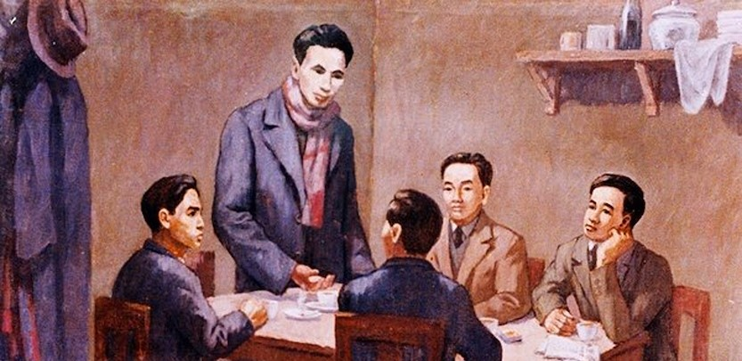
Nguyễn Ái Quốc chủ trì Hội nghị hợp nhất ba tổ chức cộng sản tại Hồng Kông, thành lập Đảng Cộng sản Việt Nam. Luận cương chính trị được thông qua — kim chỉ nam cho cách mạng giải phóng dân tộc.
1930 – 1936
Phong trào cách mạng 1930–1936, tiêu biểu nhất là phong trào 1930–1931 với đỉnh cao Xô Viết Nghệ Tĩnh — "tiếng sấm" đầu tiên của quần chúng công nông dưới sự lãnh đạo của Đảng. Sau giai đoạn thoái trào 1932–1935 do địch khủng bố trắng, lực lượng cách mạng dần phục hồi, chuẩn bị cho cao trào mới.

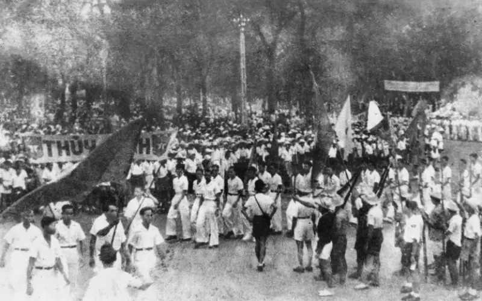
1936 – 1939
Phong trào dân chủ Đông Dương Đại hội bùng nổ khi Mặt trận Bình dân lên cầm quyền ở Pháp. Hàng triệu người ký kiến nghị đòi quyền tự do, dân chủ — chuẩn bị lực lượng chính trị cho giai đoạn đấu tranh tiếp theo.
01 · 09 · 1939
Chiến tranh Thế giới lần thứ II bùng nổ khi Đức xâm lược Ba Lan. Pháp bại trận năm 1940, chính phủ Vichy bù nhìn ra đời, nhượng Đông Dương cho Nhật — đẩy nhân dân ta vào cảnh "một cổ hai tròng".

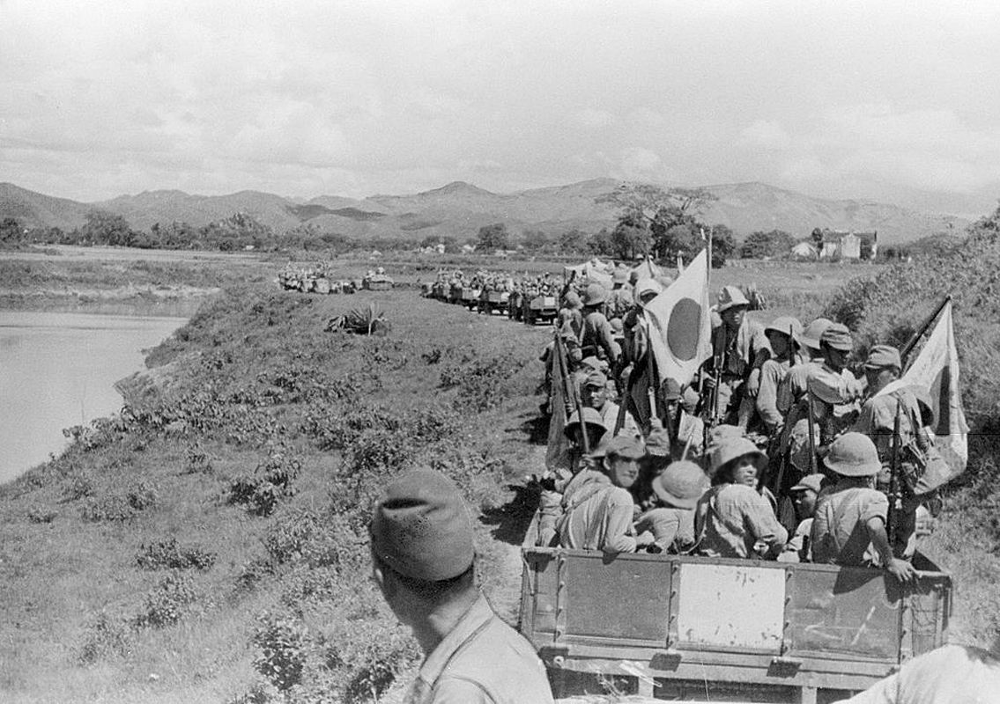
1939 – 1945
Nhật vào Đông Dương, nhân dân ta chịu cảnh "một cổ hai tròng" Pháp–Nhật. Đảng chuyển hướng chỉ đạo chiến lược, đặt nhiệm vụ giải phóng dân tộc lên hàng đầu. Tiếng súng khởi nghĩa Bắc Sơn, Nam Kỳ (1940) vang lên — mầm mống của lực lượng vũ trang cách mạng sau này.
Tháng 11 · 1939
Hội nghị Ban Chấp hành Trung ương lần thứ 6 (11/1939) đặt nhiệm vụ giải phóng dân tộc lên hàng đầu, tạm gác khẩu hiệu cách mạng ruộng đất, chủ trương thành lập Mặt trận Thống nhất Dân tộc Phản đế Đông Dương — bước chuyển hướng chỉ đạo chiến lược đầu tiên.
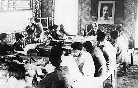
Tháng 5 · 1941
Hội Nghị Trung ương 8 — Mặt Trận Việt Minh ra đời. Lãnh tụ Nguyễn Ái Quốc trở về Tổ quốc sau 30 năm bôn ba. Tại hang Pắc Bó, Việt Minh được thành lập — ngọn cờ đoàn kết toàn dân hướng về độc lập.
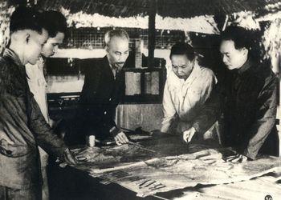
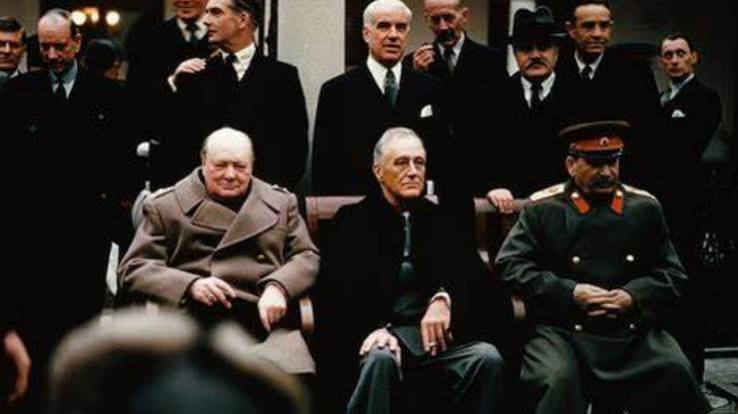
Đầu năm 1945
Chiến tranh thế giới thứ hai bước vào giai đoạn kết thúc: Hội nghị Ianta (2/1945) định hình trật tự thế giới hậu chiến; ngày 8/5/1945 phát xít Đức đầu hàng Đồng minh vô điều kiện; tại châu Á, quân Nhật liên tiếp thất bại, suy yếu rõ rệt trên khắp các mặt trận.
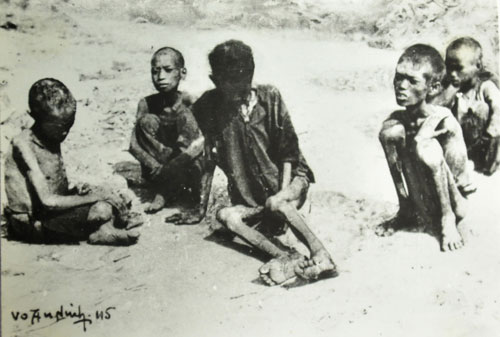
Cuối 1944 – Đầu 1945
Nạn đói khủng khiếp — hơn 2 triệu người chết. Chính sách vơ vét của Nhật-Pháp gây ra thảm họa đói kinh hoàng tại Bắc Bộ. Nỗi đau dân tộc thổi bùng ý chí cách mạng đến cực điểm.
09 · 03 · 1945
Nhật đảo chính Pháp — thời cơ vàng đến. Nhật lật đổ thực dân Pháp trên toàn Đông Dương trong một đêm, bộ máy cai trị sụp đổ. Ngày 12/3/1945, Đảng ra Chỉ thị "Nhật – Pháp bắn nhau và hành động của chúng ta", xác định kẻ thù chính lúc này là phát xít Nhật.
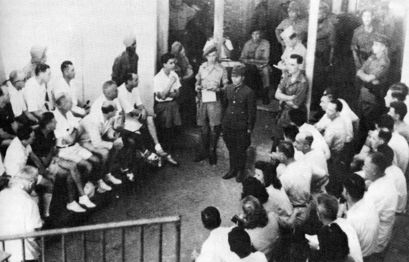
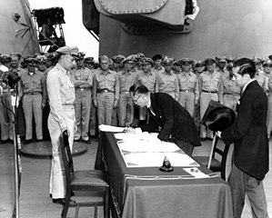
15 · 08 · 1945
Sau khi Mỹ ném hai quả bom nguyên tử xuống Hiroshima (6/8) và Nagasaki (9/8/1945), ngày 15/8/1945 Nhật hoàng tuyên bố đầu hàng Đồng minh vô điều kiện. Khoảng trống quyền lực ở Đông Dương hình thành — thời cơ tổng khởi nghĩa đã chín muồi.
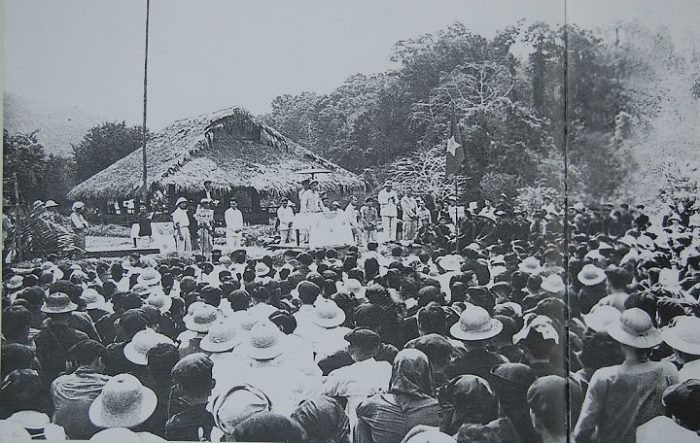
13 – 17 · 08 · 1945
Quân lệnh số 1 (13/8) phát lệnh Tổng khởi nghĩa. Hội nghị toàn quốc của Đảng (14–15/8) và Đại hội Quốc dân Tân Trào (16–17/8) nhất trí chủ trương Tổng khởi nghĩa, bầu Ủy ban Giải phóng dân tộc do Hồ Chí Minh làm Chủ tịch.
19 – 25 · 08 · 1945
Cách Mạng Tháng Tám thành công. Hàng vạn người dân Hà Nội (19/8), Huế (23/8) và Sài Gòn (25/8) đồng loạt vùng lên giành chính quyền. Trong chưa đầy hai tuần, cách mạng thắng lợi trên phạm vi cả nước. Vua Bảo Đại thoái vị.
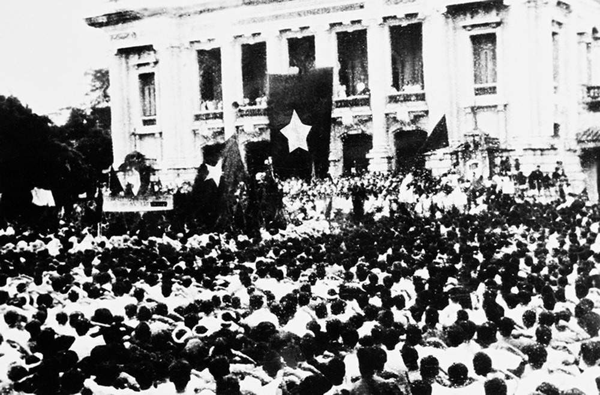
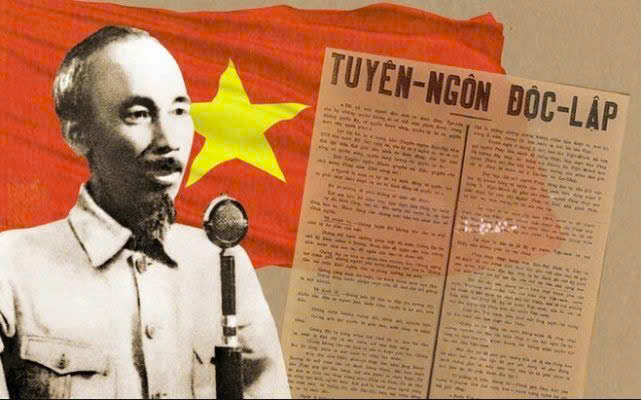
02 · 09 · 1945
Tại quảng trường Ba Đình, Hà Nội, Chủ tịch Hồ Chí Minh đọc bản Tuyên ngôn Độc lập, trịnh trọng tuyên bố trước toàn thế giới sự ra đời của nước Việt Nam Dân chủ Cộng hòa — nhà nước công nông đầu tiên ở Đông Nam Á.
Diễn Biến
Kết quả & Ý nghĩa
Bối Cảnh Quốc Tế